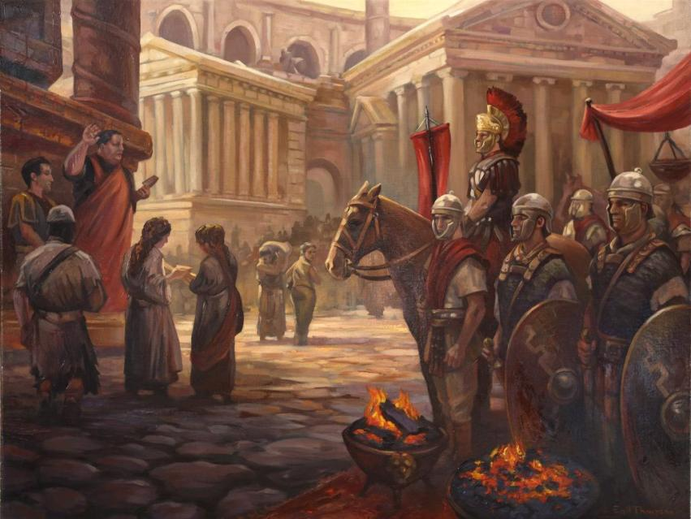
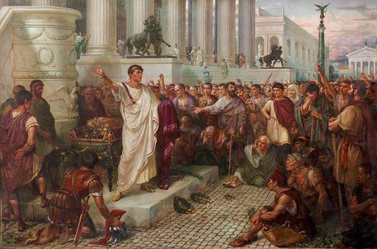
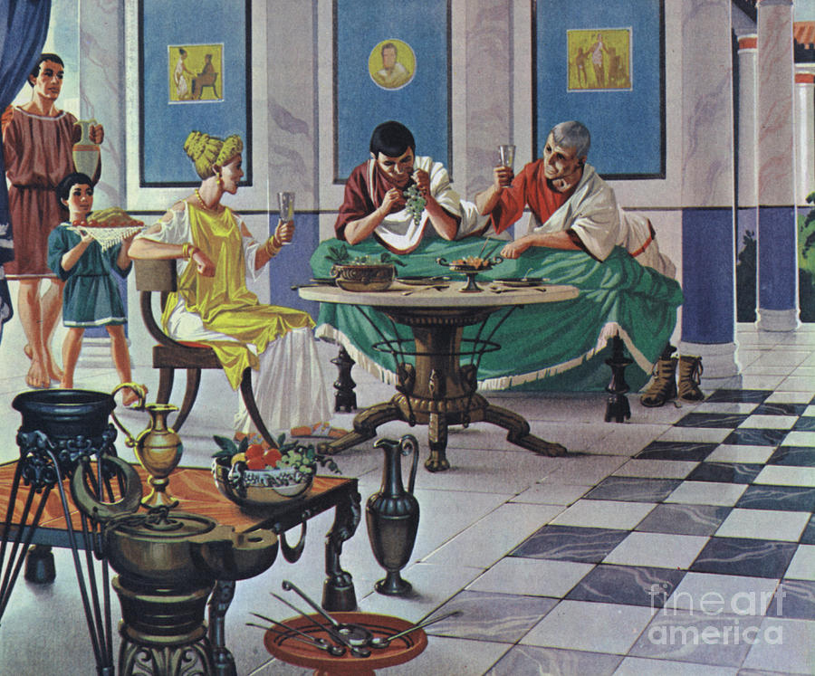
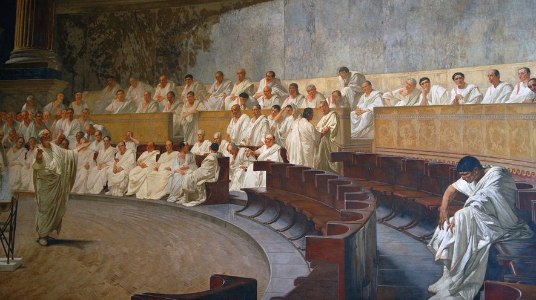
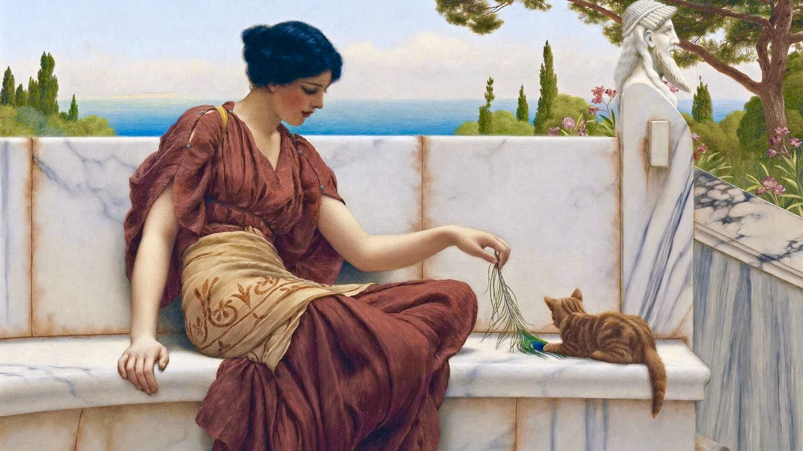
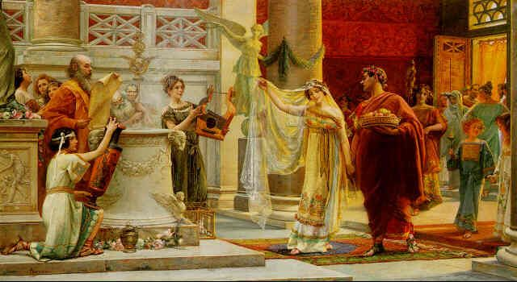
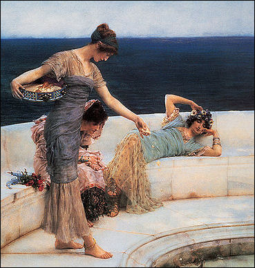

<!DOCTYPE html>
<html lang="en"></html>

<head>
    <title>Roman Society</title>
    <link rel="stylesheet" href="style.css">
</head>

<body></body>

<div class="header">

<em><h1> Welcome to the Society Page!</h1></em>
<p>This page shall introduce the viewers of this site detailed information about Roman society</p>

</div>


<div class="topnav">

<il><a href="Religion.html"><p>Religion Page! </p></a>
<il><a href="Popular Figures.html"><p>Popular figures Page! </p></a>
<il><a href="index.html"><p>Home Page! </p></a>

</div>

<h2><b><p>An introduction to Roman society</p></b></h2>
<ul></ul>

<a></a>

<h3></b><p>Ethics and morality</p></h3>

</div>

<body>

<ul>

<il><p> In ancient Rome, it was a bit of a trend for them to create new inventions and remake them, for example during the Punic War where the Romans tried their best to mimic Carthage and use their tactics against them and the Romans even made their own modifications to products such as ships.</p></il>
<il><p>Ancient Romans were fueled by something known as 'Dignifas' meaning "dignity" and Roman society fueled men, especially of noble birth to strive far and become successful statesmen</p></il>
<il><p>Roman culture was militaristic with martial attributes being an esteemed ability to develop.</p></il>
<il><p>Romans prized values such as courage, conviction and being dutiful. Romans considered fairness, loyalty and forgiveness good virtues.</p></il>

</ul>
</body>

<h3></b><p>Romans and Entertainment</p></h3>

<body>

<ul>

<il><p>The Roman styles are heavily influenced by Greek, in evidence to this statement a lot of Romans had practiced similar Greek styles to adorn their homes - these examples have been discovered at Pompeii.</p></il>
<il><p>Romans are also known to have made statues of people they considered honourable. During the Early Republic period, Romans had began to practice poetry, comedy, history as well as tragic stories.</p></il>
<il><p> As stated beforehand, Roman culture was somewhat influenced by Greeks and this also resembled on the musical side of Rome. The Romans also used instruments for the military such as trumpets and there were military positions such as the Signeferi who were responsible for holding the Roman standard.</p></il>

</ul>
</body>

<div>

<ul></ul>


<h2></b><p>Roman Education, Government, Economy and Military</p></h2>

<body>

<ul>
<il><p> A huge part of Roman society was to provide as much participation as possible and add up to their prestige in Rome, it was an exclusively patriarchal society and women were second class citizens - in which cases noblewomen had better opportunities to participate within the public sphere compared to lowborn women.</p></il>
<il><p>Rome couldn't resist a good chance to expand, especially during the Republic where Rome had two leaders named Consuls who shared power - the Consuls had been elected for only one year at a time before new consuls were elected by a Senate. These measures were emplaced to prevent an authoritarian rule in the Senate, however to much negligance to that possibility Julius Caesar was dictator during the late Republic period.</p></il>
<il><p>The Consuls understood they only had one year before the next elections to obtain what Romans desired most, prestige and glory to honor their family names and these aspects held a high significance in Roman society - men usually achieved this through military victories.</p></il>
</ul>
</body>

<h3></b><p>Roman Education</p></h3>

<body>

<ul>

<il><p>During the early Republic period, there were no public instiutions such as schools to educate people so instead were educated by their parents or by slaves, due to Rome's heavy association with Greece a majority of these slaves were also of Greek origin and had an important role in the upbringing of Roman men including educating them within the Greek language.</p></il>
<il><p>Young boys in particular had a huge educational focus due to their roles within a society heavily focused on patriarchy, at the age of 16 it was common for sons of noblemen to become apprentices within the political sector and campaigned during warfare as well, this tradition lasted long into the Imperial period. As expected, wealthier families could afford better circumstances for their offsprings, boys and girls could be sent at the age of 7 to be privately educated in reading, writing, arithmetic and Greek till the age of 11.</p></il>
<il><p>Roman children had summer holidays and were exempt from studies during religious festivals and pupils attended lessons daily.</p></il>

</ul>
</body>

<ul></ul>

<h3></b><p>Roman Government</p></h3>

<body>

<ul>

<il><p>During the Roman Kingdom, the predecessor state of the Roman Republic the Senate acted as an advisory body for the King of Rome, however later on as the Republic was established the Senate achieved absolute power as a democratic government. The most powerful members of the Senate were the Consuls - of which there were usually two elected at a time and they served for only a year until their term is over. Typically, Consuls became proconsuls who often governed provinces or acted on behalf of a Consul sitting in office.</p></il>
<il><p>Senators without administrative positions usually acted as advisors, legislations had toe be passed by the Senate via a vote however corruption and political scheming was also a norm, for example the brutal murder of Julius Caesar.</p></il>
<il><p>To prevent power play, the Roman political system required magistrates to share power with their fellow colleagues in office. One of the most powerful positions in ancient Rome was that of the Censor whose power was absolute and no magistrate could oppose his decisions except for his successor, Censors were elected for a period of five years. Other popular positions include the Aedile Curules who were responsible for overseeing care of buildings and supervision of the markets.</p></il>
<il><p>There were also other administraive posiitons that Roman men were elected into, for example the position of Praetor which either refered to a nobleman who served as a magistrate or the commander of an army. Another popular office was the Tribune of the Plebs (or Plebeian Tribune) and he was responsible for representing the Plebeian class - one of the most popular permissions of the Tribune was to veto the actions of consuls and magistrates to protect the interests of the plebeian class (lower class).</p></il>

</ul>

</body>

<ul></ul>

<h3></b><p>Roman Military</p></h3>

<body>

<ul>

<il><p>As Romans were popular for using inspiration for a majority of state practices, the same type of sentiment was displayed within the Roman military as well, taking after Greek city-states the early Roman army practiced Greek tactics and was usually consisted around 9,000 troops. This system however didn't survive long and legions were later introduced as a much more effective way of governing over the military sector.</p></il>
<il><p>Legions usually consisted of around 4,000 to 5,000 troops however legions required strong moderation due to recruitment failures - the reasonings being accidents, battle casualities, disease and often desertion.</p></il>
<il><p>Throughout Roman history, conquests were usually land-based however the navy played a role of high significance in conquests - but in spite of this never achieved the same prestiege that Roman legions enjoyed.</p></il>
<il><p>The most prominent expansion of the Roman navy was during the Punic Wars (war against Carthage) where Romans improved their fleets based on what type of power Carthage expressed, eventually this led to the Romans sacking the city of Carthage in 146 BC, having annexed North Africa into the Roman Empire.</p></il>

</ul>

</body>

</div>

<ul></ul>

</div>

<h3></b><p>Roman Economy</p></h3>

<body>
<ul>

<il><p>Rome's economy was heavily focused on farming and trade, Rome's natural resources provided a great deal of benefit for Roman society - oil and grape estates were supplanted as well, the industrial and manfucaturing activities were small institutions, however factories recruited workers and basic materials were mined to create buildings.</p></il>
<il><p>Because of the conquests achieved by Romans, slaves became cheaper and there were plenty of slaves that could be purchased and slave labor was heavily relied on, slaves made up around 20% of the population and grew to 40% in the city of Rome.</p></il>
<il><p>Later on, conquests stopped and slaves became more expensive during the Roman Empire.</p></il>

</body>
</ul>

</div>

<h2></b><p>Roman Women</p></h2>

<body>

<ul>

<il><p>Women in ancient Rome were second class citizens and could not hold office and because of the lack of female contribution they are less mentioned in Roman history compared to men and are usually confused with other women sometimes due to Rome's complex naming conventions additionally historians tend to debate the origins of women who are mentioned and who they could be related to.</p></il>
<il><p>While Roman women held no actual participation within the government, there were plenty of women who used their positions as mothers or wives, sisters etc to influence politics behind the scenes and there are a handful of examples of women who achieved great political prowess in Roman society.</p></il>
<il><p>Although limited, the examples of Roman women who achieved much popularity include Lucretia, Livia Drusilla, Fulvia and Cornelia (mother of the Grachhi brothers) as well as Empress Helena who was canonised as "Saint Helena" for promoting Christianity with a strong force.</p></il>

</ul>
<body>


<ul></ul>


<h3></b><p>Growing up as a Roman woman</p></h3>

<body>

<ul>

<il><p>As demonstrated from Roman art, women played the same games as boys do such as hoop-rolling and playing ball, as well as a particular activity called knucklebones. In the tombs of women who died in childhood, dolls have been discovered at their burial sites suggesting that young girls did play with dolls during the ancient Roman period, these dolls were usually wooden and girls who came of age usually dedicated their dolls to the Roman goddess, Diana or to Venus (the goddess of fertility, beauty etc) when they were preparing to be married.</p></il>
<il><p>Due to the time period being a woman heavily relied on your background, in some cases personal contributions and marriage. Usually, girls of a patrician (noble) background were married as young as 12 years old whereas lower-class females married in later teenage years, boys on the other hand had to be at least 14 years of age.</p></il>
<il><p>At the time, love marriages would be a lot less considered and more so towards what benefited the family of which the girl belonged to - for example Roman noblewomen married based on political motivation. Although Roman society can be seen as heavily sexist, upper-class women could very much obtain prominence in society and even develop personal independence despite Roman laws that state that a woman was property of her husband or her father and many noblewomen were also highly educated, even within the same subjects that men studied.</p></il>

<body>

<ul>

<ul></ul>


<h3></b><p>Marriage</p></h3>

<body>

<ul>

<li><p>In some marriages presented in ancient Rome, respectable Romans considered marriage to be a practice of mutual loyalty in which the husband and wife shared their properties and interest. It is also known that Roman women had been passed from their fathers to their husbands however the practice of women becoming legally submissive to their husbands later became an outdated practice in the 1st century BCE. </p></li>
<li><p>Husbands could divorce their wives based on lack of fertility or due to adultery. The most unequal relationship was a "manus marriage" which provided full legal authority to the husband. Interestingly, under the reign of Julius Caesar the practice of manus marriage became absent in society and women were later put under the jurisdiction of their fathers even if they did move into their husbands homes.</p></li>

<h3></b><p>Divorce and domestic life</p></h3>

<body>

<ul>

<li><p>Divorce was legal however was considered a very informal practice, where a wife would leave her husband's household and her dowry would be returned to her maiden family. During the late Republic, a man or a woman could divorce without a reason supporting said divorce. Usually men kept the children by their side due to the Roman family structure strongly favouring the concept of women and children being property, however women could take children under their custody if they could prove their former spouse was not capable.</p></li>
<li><p>Remarriage rates were high in ancient Rome, it was common for noblewomen to outlive their husbands and women in general who had lost their spouses due to war or politics or disease were usually remarried. Concubinage was also a practice (Where a woman lived as a partner with a man who she wasn't married to) there was no shame with families living with concubines and there are examples of Roman men usually taking slaves as concubines as well.</p></li>
<li><p>At homes, domestic abuse was illegal under classical Roman law however domestic abuse prevention was not advanced and there was no force preventing domestic abuse, additionally domestic abuse was a reason women could use to divorce their husbands.</p></li>
<li><p>Vipsania Agrippina, the daughter of Augustus' close friend, Agrippa was betrothed and later married to Tiberius, the son of Livia Drusilla however Augustus forced the couple to divorce even though Tiberius was satisfied with Vipsania.</p></li>


<h2></b><p>Daily life of women</p></h2>

<ul></ul>


<body>

</ul>

<h3></b><p>Aristocratic women and their contributions</p></h3>

<body>

<ul>

<li><p>Aristocratic women usually maintained huge households, a lot of which held skilled and educated slaves and wealthy couples usually owned various homes. It was common for women to involve themselves in their husband's business affairs because men were usually absent from their homes due to military campaigns or administrative duties therefore leaving the household in the charge of it's matriarch.</p></li>
<li><p>An example of this is when Julius Caesar was absent for the mid 50s BC and his wife, Calpurnia was responsible for the assets and maintence of properties and businesses.</p></li>
<li><p> One of the most important elements of women's lives was in the clothing industry, and using wool to create clothes was deemed as a woman's domestic occupation.</p></li>

</ul>

</body>

<h3></b><p>Roman women in business</p></h3>

<body>

<ul>

<li><p> Interestingly, women were very skilled in terms of business and governed it the same way men did, this was proven to be a virtious skill for women to have as they would be of great assistance to their husbands and their careers - women appeared just as interested as men did during business affairs and shared simlar speculations regarding business affairs as well. Women in business are noted to have been financially educated as well; women borrowed money, invested in funds, worked with their estates and although Roman women were prohibited from obtaining legal political power they were very much permitted to assist the men of their families within the economic sector.</p></li>
<li><p>Additionally, Roman women are recorded to have owned busines and co-operations within their own rights which many wealthy men did use to their advantage. Some typical occupations that women held resembled many occupations that women held in later periods of history as well; for example being midwives, prostitutes, wet nurses or actresses - some of which were frowned upon by pious individuals and many of which were also respectable.</p></li>

</ul>

</body>

<h3></b><p>Roman women in politics</p></h3>

<body>

<ul>

<li><p>Roman women didn't have any legal power within the political sphere, it has always been male exclusive and politics was realistically only open to women of upper-class backgrounds who acted on behalf of their male counterparts, many women didn't have the right to vote either and this was in spite of their political influence or social background. It is noted however that there are plenty of examples of Roman women who manipulated, persauded or even controlled their husbands to influence politics. This was mostly because the lives of noblewomen heavily relied on the status of the men within their families, therefore a lot of political families may have had to share power with their women.</p></li>
<li><p>Women were also participants of overthrowing men in power, for example Agrippina the Younger and Livilla conspired to have Caligula overthrown, the plot was later discovered however. When Agrippina the Younger's son became Emperor Nero, it is recorded that she had listened into the Senate hearings from behind a curtain.</p></li>

</ul>

</body>


    <style>
        body {
            background-color: rgb(80, 4, 4) ;
            color:rgb(250, 193, 154)
        }
    
    </style>
    </html>

    
    
    <body>